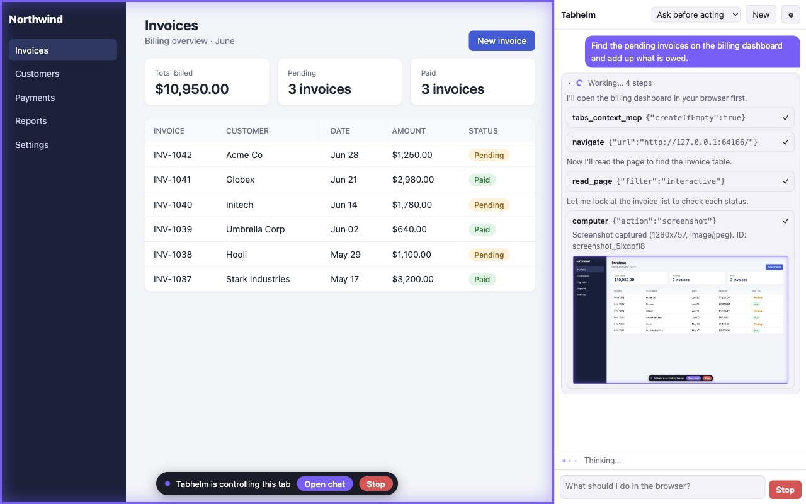
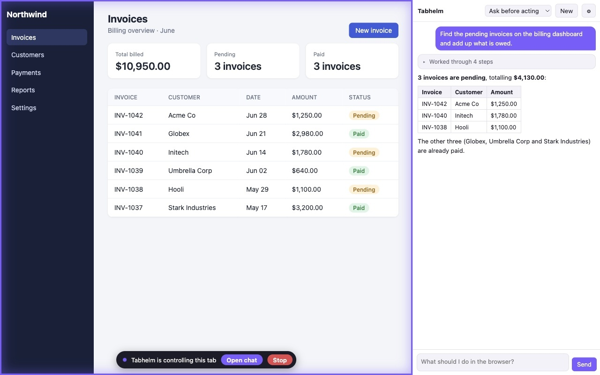
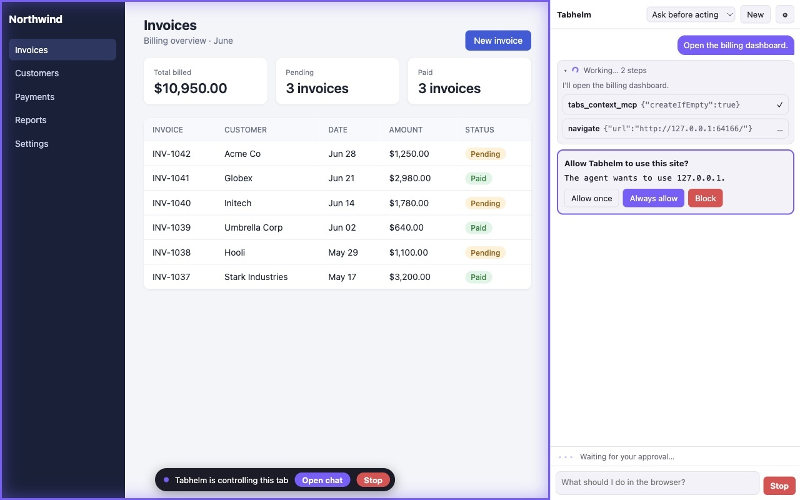
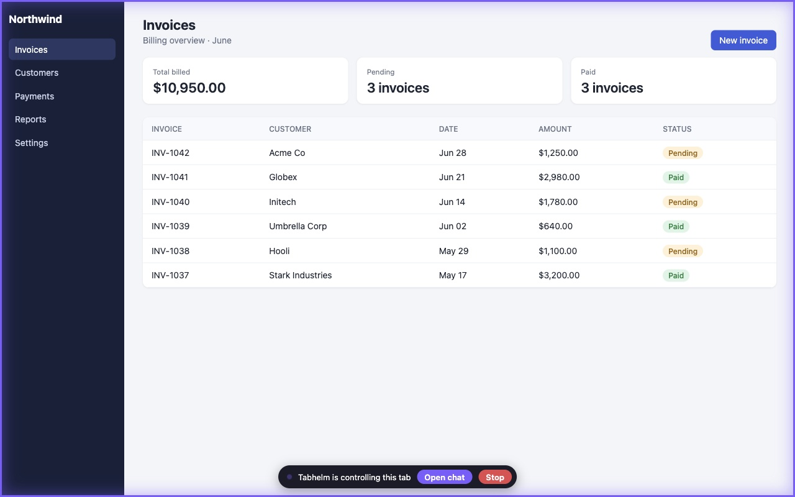
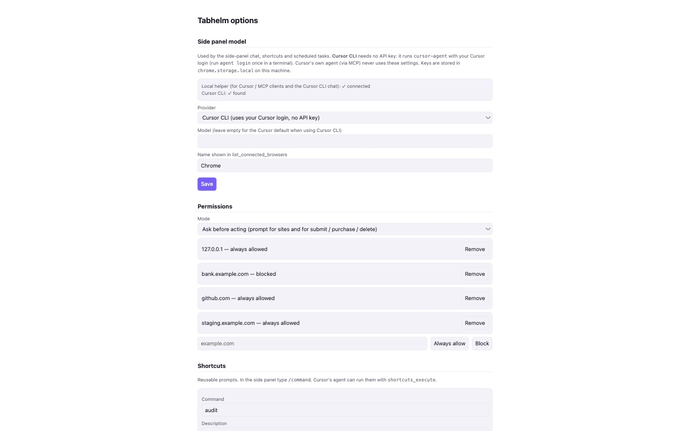

Tabhelm is a Chrome extension plus a small local helper. It lets an agent you choose (Cursor's agent, or the built-in side-panel chat) see and control your browser to test web apps, read pages behind a login, fill forms and debug front-end problems.

You stay in control
The agent only works in its own tab group. Your other tabs are never touched.
Per-site permissions (allow once, always, block) and an "Ask before acting" mode for submit, purchase and delete.
A visible bar on controlled tabs with a Stop button that cancels everything at once.
It never types into password or payment fields and never solves CAPTCHAs. Page content is treated as data, never as instructions.
No servers, no analytics, no tracking.




Tabhelm is unofficial and is not affiliated with or endorsed by Cursor/Anysphere, Anthropic, Google or OpenAI.